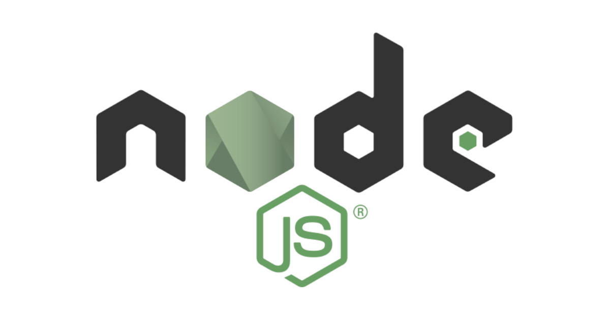
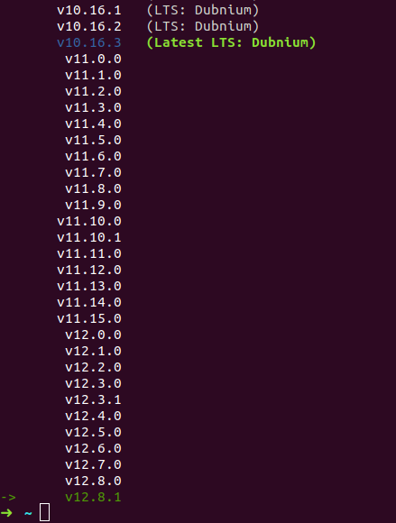
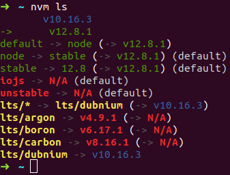

<!DOCTYPE html><html><head><meta charset="utf-8"><title>nvm：安裝、切換不同 Node.js 版本的管理器 | Titangene Blog</title><meta http-equiv="X-UA-Compatible" content="IE=edge"><meta name="viewport" content="width=device-width,initial-scale=1,maximum-scale=1"><meta name="HandheldFriendly" content="True"><meta name="apple-mobile-web-app-capable" content="yes"><meta name="author" content="Titangene"><link rel="shortcut icon" href="/favicon.ico"><link rel="alternate" href="/atom.xml" title="Titangene Blog"><meta name="description" content="nvm 是 Node.js 的版本管理器 (version manager)，可在同一台主機上安裝多個版本的 Node.js 環境，因為不同專案可能會使用不同的 Node.js 版本，那就需要透過一個版本管理器來切換不同的 Node.js 版本。"><meta property="og:type" content="article"><meta property="og:title" content="nvm：安裝、切換不同 Node.js 版本的管理器"><meta property="og:url" content="https://titangene.github.io/article/nvm.html"><meta property="og:site_name" content="Titangene Blog"><meta property="og:description" content="nvm 是 Node.js 的版本管理器 (version manager)，可在同一台主機上安裝多個版本的 Node.js 環境，因為不同專案可能會使用不同的 Node.js 版本，那就需要透過一個版本管理器來切換不同的 Node.js 版本。"><meta property="og:locale" content="zh_TW"><meta property="og:image" content="https://titangene.github.io/images/cover/node.jpg"><meta property="article:published_time" content="2020-04-19T15:56:52.000Z"><meta property="article:modified_time" content="2020-05-03T14:05:35.000Z"><meta property="article:author" content="Titangene"><meta property="article:tag" content="CLI"><meta property="article:tag" content="w3HexSchool"><meta property="article:tag" content="JavaScript"><meta property="article:tag" content="Node.js"><meta property="article:tag" content="version manager"><meta name="twitter:card" content="summary_large_image"><meta name="twitter:image" content="https://titangene.github.io/images/cover/node.jpg"><meta name="twitter:creator" content="@titangeneTW"><meta name="twitter:site" content="@titangene_blog"><meta property="fb:admins" content="100001106016019"><meta property="fb:app_id" content="2470546159839111"><meta property="og:image:width" content="1200"><meta property="og:image:height" content="630"><meta name="google-site-verification" content="AaJ39L7h-nWwJjXJMhAMtXSF6H6BUgGWXC80kYvLic8"><link href="https://fonts.googleapis.com/css2?family=Roboto&display=swap" rel="stylesheet"><link href="https://fonts.googleapis.com/css?family=Source+Code+Pro&display=swap" rel="stylesheet"><link rel="stylesheet" href="https://cdnjs.cloudflare.com/ajax/libs/font-awesome/5.13.0/css/all.min.css"><link rel="stylesheet" href="https://unpkg.com/gitalk/dist/gitalk.css"><link rel="stylesheet" href="/style.css"><script async src="https://www.googletagmanager.com/gtag/js?id=UA-129758206-1"></script><script>!function(a){function n(){dataLayer.push(arguments)}a.dataLayer=a.dataLayer||[],n("js",new Date),n("config","UA-129758206-1")}(window)</script><script>function setLoadingBarProgress(e){document.getElementById("loading-bar").style.width=e+"%"}</script><meta name="generator" content="Hexo 4.2.0"><link rel="alternate" href="/atom.xml" title="Titangene Blog" type="application/atom+xml"></head></html><body><div id="loading-bar-wrapper"><div id="loading-bar"></div></div><script>setLoadingBarProgress(20)</script><header class="l_header"><div class="wrapper"><div class="nav-main container container--flex"><a class="logo flat-box" href="/">Titangene Blog</a><div class="menu"><ul class="h-list"><li><a class="flat-box nav-home" href="/">Home</a></li><li><a class="flat-box nav-archives" href="/archives">Archives</a></li></ul><div class="underline"></div></div><div class="m_search"><form name="searchform" class="form u-search-form"><input type="text" class="input u-search-input" placeholder="Search"> <i class="fas fa-search"></i></form></div><ul class="switcher h-list"><li class="s-search"><a class="fas fa-search" href="javascript:void(0)"></a></li><li class="s-menu"><a class="fas fa-bars" href="javascript:void(0)"></a></li></ul></div><div class="nav-sub container container--flex"><a class="logo flat-box" href="/">Titangene Blog</a><ul class="switcher h-list"><li class="s-comment"><a class="far fa-comment-alt" href="javascript:void(0)"></a></li><li class="s-top"><a class="fas fa-arrow-up" href="javascript:void(0)"></a></li><li class="s-toc"><a class="fas fa-list-ol" href="javascript:void(0)"></a></li></ul></div></div></header><aside class="menu-phone"><nav><a href="/" class="nav-home nav">Home </a><a href="/archives" class="nav-archives nav">Archives</a></nav></aside><script>setLoadingBarProgress(40)</script><div class="l_body"><div class="container clearfix"><div class="l_main"><article id="post-nvm" class="post white-box article-type-post" itemscope itemprop="blogPost"><section class="meta"><h2 class="title"><a href="/article/nvm.html">nvm：安裝、切換不同 Node.js 版本的管理器</a></h2><span class="post-time"><span class="post-meta-item-icon"><i class="fa fa-calendar"></i> </span><span class="post-meta-item-text">發表於</span> <time title="建立時間：2020-04-19 23:56:52" itemprop="dateCreated datePublished" datetime="2020-04-19T23:56:52+08:00">2020-04-19 </time><span class="post-meta-divider">|</span> <span class="post-meta-item-icon"><i class="fa fa-calendar-check"></i> </span><span class="post-meta-item-text">更新於</span> <time title="修改時間：2020-05-03 22:05:35" itemprop="dateModified" datetime="2020-05-03T22:05:35+08:00">2020-05-03</time></span> <span class="comments-count"><span class="post-meta-divider">|</span> <span class="post-meta-item-icon"><i class="fas fa-comment"></i> </span><a href="https://titangene.github.io/article/nvm.html#comments" class="article-comment-count">留言</a></span><div class="post-category"><span class="post-meta-item-icon"><i class="fa fa-folder"></i> </span><span class="post-meta-item-text">分類於</span> <span itemprop="about" itemscope itemtype="http://schema.org/Thing"><a href="/categories/web-dev/" itemprop="url" rel="index"><span itemprop="name">Web Dev</span></a></span></div></section><section class="toc-wrapper"><h3>目錄</h3><ol class="toc"><li class="toc-item toc-level-2"><a class="toc-link" href="#安裝-NVM"><span class="toc-text">安裝 NVM</span></a></li><li class="toc-item toc-level-2"><a class="toc-link" href="#version：確認-NVM-是否安裝成功"><span class="toc-text">--version：確認 NVM 是否安裝成功</span></a></li><li class="toc-item toc-level-2"><a class="toc-link" href="#install：利用-NVM-安裝-Node-js"><span class="toc-text">install：利用 NVM 安裝 Node.js</span></a></li><li class="toc-item toc-level-2"><a class="toc-link" href="#ls-remote：察看可用的安裝版本"><span class="toc-text">ls-remote：察看可用的安裝版本</span></a></li><li class="toc-item toc-level-2"><a class="toc-link" href="#ls：查看目前安裝了哪些版本"><span class="toc-text">ls：查看目前安裝了哪些版本</span></a></li><li class="toc-item toc-level-2"><a class="toc-link" href="#use：切換-Node-js-版本"><span class="toc-text">use：切換 Node.js 版本</span></a></li><li class="toc-item toc-level-2"><a class="toc-link" href="#current：察看目前使用版本"><span class="toc-text">current：察看目前使用版本</span></a></li><li class="toc-item toc-level-2"><a class="toc-link" href="#run：直接執行-Node-js"><span class="toc-text">run：直接執行 Node.js</span></a></li><li class="toc-item toc-level-2"><a class="toc-link" href="#exec：指定要執行的-Node-js-版本"><span class="toc-text">exec：指定要執行的 Node.js 版本</span></a></li><li class="toc-item toc-level-2"><a class="toc-link" href="#which：察看-Node-js-的安裝路徑"><span class="toc-text">which：察看 Node.js 的安裝路徑</span></a></li><li class="toc-item toc-level-2"><a class="toc-link" href="#alias"><span class="toc-text">alias</span></a></li><li class="toc-item toc-level-2"><a class="toc-link" href="#alias：察看別名、設定別名"><span class="toc-text">alias：察看別名、設定別名</span></a><ol class="toc-child"><li class="toc-item toc-level-3"><a class="toc-link" href="#察看別名"><span class="toc-text">察看別名</span></a></li><li class="toc-item toc-level-3"><a class="toc-link" href="#設定別名"><span class="toc-text">設定別名</span></a></li></ol></li><li class="toc-item toc-level-2"><a class="toc-link" href="#資料來源"><span class="toc-text">資料來源</span></a></li></ol></section><section class="article typo"><div class="article-entry" itemprop="articleBody"><p></p><p>nvm 是 Node.js 的版本管理器 (version manager)，可在同一台主機上安裝多個版本的 Node.js 環境，因為不同專案可能會使用不同的 Node.js 版本，那就需要透過一個版本管理器來切換不同的 Node.js 版本。</p><a id="more"></a><h2 id="安裝-NVM"><a class="header-anchor" href="#安裝-NVM"></a>安裝 NVM</h2><p>可用 <code>cURL</code> 或 <code>wget</code> 指令使用安裝腳本安裝或更新 nvm：</p><figure class="highlight shell"><table><tr><td class="gutter"><pre><span class="line">1</span><br></pre></td><td class="code"><pre><code class="hljs shell"><span class="hljs-meta">$</span><span class="bash"> curl -o- https://raw.githubusercontent.com/nvm-sh/nvm/v0.34.0/install.sh | bash</span><br></code></pre></td></tr></table></figure><p>或</p><figure class="highlight shell"><table><tr><td class="gutter"><pre><span class="line">1</span><br></pre></td><td class="code"><pre><code class="hljs shell"><span class="hljs-meta">$</span><span class="bash"> wget -qO- https://raw.githubusercontent.com/nvm-sh/nvm/v0.34.0/install.sh | bash</span><br></code></pre></td></tr></table></figure><p>此安裝腳本會將 nvm repo clone 到 <code>~/.nvm</code>，並且將 source line 新增至你的 profile 設定 ( <code>~/.bash_profile</code>、<code>~/.zshrc</code>、<code>~/.profile</code> 或 <code>~/.bashrc</code> )：</p><figure class="highlight bash"><table><tr><td class="gutter"><pre><span class="line">1</span><br><span class="line">2</span><br><span class="line">3</span><br></pre></td><td class="code"><pre><code class="hljs bash"><span class="hljs-built_in">export</span> NVM_DIR=<span class="hljs-string">"<span class="hljs-variable">$HOME</span>/.nvm"</span><br>[ -s <span class="hljs-string">"<span class="hljs-variable">$NVM_DIR</span>/nvm.sh"</span> ] &amp;&amp; \. <span class="hljs-string">"<span class="hljs-variable">$NVM_DIR</span>/nvm.sh"</span>  <span class="hljs-comment"># This loads nvm</span><br>[ -s <span class="hljs-string">"<span class="hljs-variable">$NVM_DIR</span>/bash_completion"</span> ] &amp;&amp; \. <span class="hljs-string">"<span class="hljs-variable">$NVM_DIR</span>/bash_completion"</span>  <span class="hljs-comment"># This loads nvm bash_completion</span><br></code></pre></td></tr></table></figure><p>如果在 Linux 執行安裝腳本後，執行下面指令會顯示以下訊息或沒有任何訊息時，建議重開一個新的終端機 (terminal) 再重新執行一次 <code>nvm</code> 指令：</p><figure class="highlight shell"><table><tr><td class="gutter"><pre><span class="line">1</span><br><span class="line">2</span><br></pre></td><td class="code"><pre><code class="hljs shell"><span class="hljs-meta">$</span><span class="bash"> <span class="hljs-built_in">command</span> -v nvm</span><br>nvm: command not found<br></code></pre></td></tr></table></figure><p>如果還是無法使用 nvm，可執行下面指令立即應用 ZSH 的設定：</p><figure class="highlight shell"><table><tr><td class="gutter"><pre><span class="line">1</span><br></pre></td><td class="code"><pre><code class="hljs shell"><span class="hljs-meta">$</span><span class="bash"> <span class="hljs-built_in">source</span> .zshrc</span><br></code></pre></td></tr></table></figure><div class="warning"><p>注意：</p><ul><li>使用 <code>nvm</code> 時，不需要 <code>sudo</code> 即可使用 <code>npm -g</code> 全域安裝模組，所以與其執行 <code>sudo npm i -g</code>，不如執行 <code>npm i -g</code></li><li>若你有 <code>~/.npmrc</code>，請確保裡面不包含任何 <code>prefix</code> 的設定 (因為與 <code>nvm</code> 不相容)</li><li>你可以 (但不應該) 保留以前在 “系統” 安裝的 Node.js，但 <code>nvm</code> 只對你的使用者帳戶 (用於安裝 <code>nvm</code> 的使用者帳戶) 可用。可能會導致版本不 match，因為其他使用者會使用 <code>/usr/local/lib/node_modules/*</code>，而使用者帳戶會使用 <code>~/.nvm/versions/node/vX.X.X/lib/node_modules/*</code></li></ul></div><h2 id="version：確認-NVM-是否安裝成功"><a class="header-anchor" href="#version：確認-NVM-是否安裝成功"></a><code>--version</code>：確認 NVM 是否安裝成功</h2><figure class="highlight shell"><table><tr><td class="gutter"><pre><span class="line">1</span><br><span class="line">2</span><br></pre></td><td class="code"><pre><code class="hljs shell"><span class="hljs-meta">$</span><span class="bash"> nvm --version</span><br>0.34.0<br></code></pre></td></tr></table></figure><h2 id="install：利用-NVM-安裝-Node-js"><a class="header-anchor" href="#install：利用-NVM-安裝-Node-js"></a><code>install</code>：利用 NVM 安裝 Node.js</h2><p>安裝 NVM 後，其實還沒安裝 Node 環境：</p><figure class="highlight shell"><table><tr><td class="gutter"><pre><span class="line">1</span><br><span class="line">2</span><br></pre></td><td class="code"><pre><code class="hljs shell"><span class="hljs-meta">$</span><span class="bash"> node  </span><br>zsh: command not found: node<br></code></pre></td></tr></table></figure><p>如果執行下面指令，會提醒你需要執行 <code>install</code> 指令才能安裝 Node.js：</p><figure class="highlight shell"><table><tr><td class="gutter"><pre><span class="line">1</span><br><span class="line">2</span><br><span class="line">3</span><br><span class="line">4</span><br></pre></td><td class="code"><pre><code class="hljs shell"><span class="hljs-meta">$</span><span class="bash"> nvm use node</span><br>N/A: version "node -&gt; N/A" is not yet installed.<br><br>You need to run "nvm install node" to install it before using it.<br></code></pre></td></tr></table></figure><p>安裝最新版的 Node.js：</p><figure class="highlight shell"><table><tr><td class="gutter"><pre><span class="line">1</span><br><span class="line">2</span><br><span class="line">3</span><br><span class="line">4</span><br><span class="line">5</span><br><span class="line">6</span><br><span class="line">7</span><br><span class="line">8</span><br></pre></td><td class="code"><pre><code class="hljs shell"><span class="hljs-meta">$</span><span class="bash"> nvm install node</span><br>Downloading and installing node v12.8.1...<br>Downloading https://nodejs.org/dist/v12.8.1/node-v12.8.1-linux-x64.tar.xz...<br><span class="hljs-meta">#</span><span class="bash"><span class="hljs-comment">################################################################################################### 100.0%</span></span><br>Computing checksum with sha256sum<br>Checksums matched!<br>Now using node v12.8.1 (npm v6.10.2)<br>Creating default alias: default -&gt; node (-&gt; v12.8.1)<br></code></pre></td></tr></table></figure><p>如果要指定安裝版本，可以直接指定版本號：</p><figure class="highlight shell"><table><tr><td class="gutter"><pre><span class="line">1</span><br></pre></td><td class="code"><pre><code class="hljs shell"><span class="hljs-meta">$</span><span class="bash"> nvm install 8.9.1</span><br></code></pre></td></tr></table></figure><p>安裝的第一個版本的 Node.js 會成員 nvm 的預設版本，新的 shell 就會以預設版本的 Node.js 來使用 (例如：<code>nvm alias default</code>)。</p><p>查看目前安裝 Node.js 的版本：</p><figure class="highlight shell"><table><tr><td class="gutter"><pre><span class="line">1</span><br><span class="line">2</span><br></pre></td><td class="code"><pre><code class="hljs shell"><span class="hljs-meta">$</span><span class="bash"> node -v</span><br>v12.8.1<br></code></pre></td></tr></table></figure><h2 id="ls-remote：察看可用的安裝版本"><a class="header-anchor" href="#ls-remote：察看可用的安裝版本"></a><code>ls-remote</code>：察看可用的安裝版本</h2><p>可以看目前有哪些可用版本可安裝，在版本號前面的 <code>-&gt;</code> 箭頭符號代表目前 nvm 正在使用的 Node.js 版本：</p><figure class="highlight shell"><table><tr><td class="gutter"><pre><span class="line">1</span><br><span class="line">2</span><br><span class="line">3</span><br><span class="line">4</span><br><span class="line">5</span><br><span class="line">6</span><br><span class="line">7</span><br><span class="line">8</span><br><span class="line">9</span><br></pre></td><td class="code"><pre><code class="hljs shell"><span class="hljs-meta">$</span><span class="bash"> nvm ls-remote</span><br>...<br>       v10.16.1   (LTS: Dubnium)<br>       v10.16.2   (LTS: Dubnium)<br>       v10.16.3   (Latest LTS: Dubnium)<br>...<br>        v12.7.0<br>        v12.8.0<br><span class="hljs-meta">-&gt;</span><span class="bash">      v12.8.1</span><br></code></pre></td></tr></table></figure><p>不過剛剛的 <code>ls-remote</code> 指令會把所有可用的版本都列出來，但通常會選擇安裝 LTS (Long-term support，長期支援) 版，所以只要加上 <code>-lts</code> 參數就可以指列出可用的 LTS 版：</p><figure class="highlight shell"><table><tr><td class="gutter"><pre><span class="line">1</span><br><span class="line">2</span><br><span class="line">3</span><br><span class="line">4</span><br><span class="line">5</span><br></pre></td><td class="code"><pre><code class="hljs shell"><span class="hljs-meta">$</span><span class="bash"> nvm ls-remote --lts</span><br>...<br>       v10.16.1   (LTS: Dubnium)<br>       v10.16.2   (LTS: Dubnium)<br>       v10.16.3   (Latest LTS: Dubnium)<br></code></pre></td></tr></table></figure><p>如果版本號的文字有特殊顏色 (不是白色字)，則代表該版本的 Node.js 有透過 nvm 安裝過，例如：我的電腦就安裝了 <code>v10.16.3</code> 和 <code>v12.8.1</code>：</p><p></p><h2 id="ls：查看目前安裝了哪些版本"><a class="header-anchor" href="#ls：查看目前安裝了哪些版本"></a><code>ls</code>：查看目前安裝了哪些版本</h2><p><code>ls</code> 指令可以查看目前安裝了哪些版本：</p><figure class="highlight shell"><table><tr><td class="gutter"><pre><span class="line">1</span><br><span class="line">2</span><br><span class="line">3</span><br><span class="line">4</span><br><span class="line">5</span><br><span class="line">6</span><br><span class="line">7</span><br><span class="line">8</span><br><span class="line">9</span><br><span class="line">10</span><br><span class="line">11</span><br><span class="line">12</span><br><span class="line">13</span><br></pre></td><td class="code"><pre><code class="hljs shell"><span class="hljs-meta">$</span><span class="bash"> nvm ls</span><br>       v10.16.3<br><span class="hljs-meta">-&gt;</span><span class="bash">      v12.8.1</span><br>default -&gt; node (-&gt; v12.8.1)<br>node -&gt; stable (-&gt; v12.8.1) (default)<br>stable -&gt; 12.8 (-&gt; v12.8.1) (default)<br>iojs -&gt; N/A (default)<br>unstable -&gt; N/A (default)<br>lts/* -&gt; lts/dubnium (-&gt; N/A)<br>lts/argon -&gt; v4.9.1 (-&gt; N/A)<br>lts/boron -&gt; v6.17.1 (-&gt; N/A)<br>lts/carbon -&gt; v8.16.1 (-&gt; N/A)<br>lts/dubnium -&gt; v10.16.3<br></code></pre></td></tr></table></figure><h2 id="use：切換-Node-js-版本"><a class="header-anchor" href="#use：切換-Node-js-版本"></a><code>use</code>：切換 Node.js 版本</h2><p>如果要使用 nvm 切換正在使用的 Node.js 版本，可用 <code>use</code> 指令：</p><figure class="highlight shell"><table><tr><td class="gutter"><pre><span class="line">1</span><br><span class="line">2</span><br></pre></td><td class="code"><pre><code class="hljs shell"><span class="hljs-meta">$</span><span class="bash"> nvm use v10.6.3</span><br>Now using node v10.16.3 (npm v6.9.0)<br></code></pre></td></tr></table></figure><p>如果切換的目標版本還沒安裝，nvm 會提醒你要安裝：</p><figure class="highlight shell"><table><tr><td class="gutter"><pre><span class="line">1</span><br><span class="line">2</span><br><span class="line">3</span><br><span class="line">4</span><br></pre></td><td class="code"><pre><code class="hljs shell"><span class="hljs-meta">$</span><span class="bash"> nvm use lts/carbon </span><br>N/A: version "lts/carbon -&gt; N/A" is not yet installed.<br><br>You need to run "nvm install lts/carbon" to install it before using it.<br></code></pre></td></tr></table></figure><p>透過 nvm 安裝 Node.js 時，nvm 會將不同的 Node.js 版本儲存在 <code>~/.nvm/versions/node/vX.X.X</code>，然後再修改 <code>$PATH</code>，將指定版本的 Node.js 路徑加入：</p><figure class="highlight shell"><table><tr><td class="gutter"><pre><span class="line">1</span><br><span class="line">2</span><br><span class="line">3</span><br><span class="line">4</span><br><span class="line">5</span><br><span class="line">6</span><br><span class="line">7</span><br><span class="line">8</span><br><span class="line">9</span><br><span class="line">10</span><br></pre></td><td class="code"><pre><code class="hljs shell"><span class="hljs-meta">$</span><span class="bash"> nvm current</span><br>v10.16.3<br><span class="hljs-meta">$</span><span class="bash"> <span class="hljs-built_in">echo</span> <span class="hljs-variable">$PATH</span>             </span><br>/home/titan/.nvm/versions/node/v10.16.3/bin:/usr/local/sbin:/usr/local/bin:/usr/sbin:/usr/bin:/sbin:/bin<br><br><span class="hljs-meta">$</span><span class="bash"> use v12.13.1</span><br><span class="hljs-meta">$</span><span class="bash"> nvm current</span><br>v12.13.1<br><span class="hljs-meta">$</span><span class="bash"> <span class="hljs-built_in">echo</span> <span class="hljs-variable">$PATH</span>             </span><br>/home/titan/.nvm/versions/node/v12.13.1/bin:/usr/local/sbin:/usr/local/bin:/usr/sbin:/usr/bin:/sbin:/bin<br></code></pre></td></tr></table></figure><p>在 nvm 的各個 Node.js 版本安裝的全域套件都會在各自版本的目錄內安裝，所以在切換至新安裝的 Node.js 版本後需要重新安裝，也因為如此，不同版本間的套件就不會有衝突問題。</p><h2 id="current：察看目前使用版本"><a class="header-anchor" href="#current：察看目前使用版本"></a><code>current</code>：察看目前使用版本</h2><p>如果忘記自己切換到哪個版本，可以用 <code>current</code> 指令：</p><figure class="highlight shell"><table><tr><td class="gutter"><pre><span class="line">1</span><br><span class="line">2</span><br></pre></td><td class="code"><pre><code class="hljs shell"><span class="hljs-meta">$</span><span class="bash"> nvm current</span><br>v10.6.3<br></code></pre></td></tr></table></figure><h2 id="run：直接執行-Node-js"><a class="header-anchor" href="#run：直接執行-Node-js"></a><code>run</code>：直接執行 Node.js</h2><p>如果要直接執行 Node.js，可以使用下面指令：</p><figure class="highlight shell"><table><tr><td class="gutter"><pre><span class="line">1</span><br><span class="line">2</span><br><span class="line">3</span><br><span class="line">4</span><br><span class="line">5</span><br></pre></td><td class="code"><pre><code class="hljs shell"><span class="hljs-meta">$</span><span class="bash"> nvm run node</span><br>Running node v12.8.1 (npm v6.10.2)<br>Welcome to Node.js v12.8.1.<br>Type ".help" for more information.<br><span class="hljs-meta">&gt;</span><br></code></pre></td></tr></table></figure><h2 id="exec：指定要執行的-Node-js-版本"><a class="header-anchor" href="#exec：指定要執行的-Node-js-版本"></a><code>exec</code>：指定要執行的 Node.js 版本</h2><figure class="highlight shell"><table><tr><td class="gutter"><pre><span class="line">1</span><br><span class="line">2</span><br><span class="line">3</span><br><span class="line">4</span><br><span class="line">5</span><br></pre></td><td class="code"><pre><code class="hljs shell"><span class="hljs-meta">$</span><span class="bash"> nvm <span class="hljs-built_in">exec</span> 12.8.1 node</span><br>Running node v12.8.1 (npm v6.10.2)<br>Welcome to Node.js v12.8.1.<br>Type ".help" for more information.<br><span class="hljs-meta">&gt;</span><br></code></pre></td></tr></table></figure><h2 id="which：察看-Node-js-的安裝路徑"><a class="header-anchor" href="#which：察看-Node-js-的安裝路徑"></a><code>which</code>：察看 Node.js 的安裝路徑</h2><p>執行下面指令可以查看特定版本的 Node.js 的安裝路徑：</p><figure class="highlight shell"><table><tr><td class="gutter"><pre><span class="line">1</span><br><span class="line">2</span><br></pre></td><td class="code"><pre><code class="hljs shell"><span class="hljs-meta">$</span><span class="bash"> nvm <span class="hljs-built_in">which</span> 12.8.1</span><br>/home/titan/.nvm/versions/node/v12.8.1/bin/node<br></code></pre></td></tr></table></figure><h2 id="alias"><a class="header-anchor" href="#alias"></a>alias</h2><p>如下圖有些版本的文字是紅色或是顯示 <code>N/A</code>，就代表該版本未在電腦安裝：</p><p></p><p>預設 alias 可以取代版本號：</p><ul><li><code>node</code>：安裝最新版的 Node.js</li><li><code>iojs</code>：安裝最新版的 io.js</li><li><code>stable</code>：此 alias 已棄用，僅適用於 v0.12 以及更舊版，目前改為 <code>node</code> alias</li><li><code>unstable</code>：此 alias 為 v0.11，最後一個 “unstable” (不穩定) Node release，在 v1.0 之後的版本都是穩定版 (in SemVer, versions communicate breakage, not stability)</li></ul><p>可在下面這些指令使用以上預設別名：</p><ul><li><code>nvm install</code></li><li><code>nvm use</code></li><li><code>nvm run</code></li><li><code>nvm exec</code></li><li><code>nvm which</code></li><li>… 等</li></ul><h2 id="alias：察看別名、設定別名"><a class="header-anchor" href="#alias：察看別名、設定別名"></a><code>alias</code>：察看別名、設定別名</h2><h3 id="察看別名"><a class="header-anchor" href="#察看別名"></a>察看別名</h3><figure class="highlight shell"><table><tr><td class="gutter"><pre><span class="line">1</span><br><span class="line">2</span><br><span class="line">3</span><br><span class="line">4</span><br><span class="line">5</span><br><span class="line">6</span><br><span class="line">7</span><br><span class="line">8</span><br><span class="line">9</span><br><span class="line">10</span><br><span class="line">11</span><br><span class="line">12</span><br></pre></td><td class="code"><pre><code class="hljs shell"><span class="hljs-meta">$</span><span class="bash"> nvm <span class="hljs-built_in">alias</span>                                                                    * ?</span><br>default -&gt; v10.16.3<br>node -&gt; stable (-&gt; v12.8.1) (default)<br>stable -&gt; 12.8 (-&gt; v12.8.1) (default)<br>iojs -&gt; N/A (default)<br>unstable -&gt; N/A (default)<br>lts/* -&gt; lts/erbium (-&gt; N/A)<br>lts/argon -&gt; v4.9.1 (-&gt; N/A)<br>lts/boron -&gt; v6.17.1 (-&gt; N/A)<br>lts/carbon -&gt; v8.16.2 (-&gt; N/A)<br>lts/dubnium -&gt; v10.17.0 (-&gt; N/A)<br>lts/erbium -&gt; v12.13.0 (-&gt; N/A)<br></code></pre></td></tr></table></figure><h3 id="設定別名"><a class="header-anchor" href="#設定別名"></a>設定別名</h3><figure class="highlight shell"><table><tr><td class="gutter"><pre><span class="line">1</span><br><span class="line">2</span><br></pre></td><td class="code"><pre><code class="hljs shell"><span class="hljs-meta">$</span><span class="bash"> nvm <span class="hljs-built_in">alias</span> titan-test v10.15.3                                                  * ?</span><br>titan-test -&gt; v10.15.3<br></code></pre></td></tr></table></figure><p>接著用 <code>nvm alias</code> 指令就會看到剛剛新增的別名所對應的 Node.js 版本：</p><figure class="highlight shell"><table><tr><td class="gutter"><pre><span class="line">1</span><br><span class="line">2</span><br><span class="line">3</span><br><span class="line">4</span><br><span class="line">5</span><br><span class="line">6</span><br><span class="line">7</span><br><span class="line">8</span><br><span class="line">9</span><br><span class="line">10</span><br><span class="line">11</span><br><span class="line">12</span><br><span class="line">13</span><br></pre></td><td class="code"><pre><code class="hljs shell"><span class="hljs-meta">$</span><span class="bash"> nvm <span class="hljs-built_in">alias</span>                                                                    * ?</span><br>titan-test -&gt; v10.15.3<br>default -&gt; v10.16.3<br>node -&gt; stable (-&gt; v12.8.1) (default)<br>stable -&gt; 12.8 (-&gt; v12.8.1) (default)<br>iojs -&gt; N/A (default)<br>unstable -&gt; N/A (default)<br>lts/* -&gt; lts/erbium (-&gt; N/A)<br>lts/argon -&gt; v4.9.1 (-&gt; N/A)<br>lts/boron -&gt; v6.17.1 (-&gt; N/A)<br>lts/carbon -&gt; v8.16.2 (-&gt; N/A)<br>lts/dubnium -&gt; v10.17.0 (-&gt; N/A)<br>lts/erbium -&gt; v12.13.0 (-&gt; N/A)<br></code></pre></td></tr></table></figure><h2 id="資料來源"><a class="header-anchor" href="#資料來源"></a>資料來源</h2><ul><li><a href="https://github.com/nvm-sh/nvm#install--update-script" target="_blank" rel="noopener">nvm-sh/nvm: Node Version Manager</a></li></ul></div><div class="article-tags tags"><a href="/tags/cli/" title="CLI">CLI</a> <a href="/tags/w3hexschool/" title="w3HexSchool">w3HexSchool</a> <a href="/tags/javascript/" title="JavaScript">JavaScript</a> <a href="/tags/node-js/" title="Node.js">Node.js</a> <a href="/tags/version-manager/" title="version manager">version manager</a></div></section><div class="article-share-links"><span>分享：</span> <a class="fab fa-facebook-f" title="Facebook" target="_blank" href="javascript:window.open('https://www.facebook.com/sharer.php?u=https%3A%2F%2Ftitangene.github.io%2Farticle%2Fnvm.html', 'Share on Facebook','width=600, height=600')"></a> <a class="fab fa-twitter" title="Twitter" target="_blank" href="javascript:window.open('https://twitter.com/share?url=https%3A%2F%2Ftitangene.github.io%2Farticle%2Fnvm.html&amp;text=nvm：安裝、切換不同 Node.js 版本的管理器&amp;hashtags=CLI,w3HexSchool,JavaScript,Node.js,versionmanager&amp;via=titangene_blog', 'Share on Twitter','width=600, height=260')"></a> <a class="fab fa-linkedin-in" title="Linkedin" target="_blank" href="javascript:window.open('https://www.linkedin.com/shareArticle?mini=true&amp;url=https%3A%2F%2Ftitangene.github.io%2Farticle%2Fnvm.html&amp;title=nvm：安裝、切換不同 Node.js 版本的管理器', 'Share on Linkedin','width=600, height=600')"></a> <a class="fab fa-facebook-messenger" title="Facebook Messenger" target="_blank" href="javascript:window.open('http://www.facebook.com/dialog/send?app_id=2470546159839111&amp;link=https%3A%2F%2Ftitangene.github.io%2Farticle%2Fnvm.html&amp;display=popup&amp;redirect_uri=https%3A%2F%2Fwww.facebook.com%2Fdialog%2Freturn%2Fclose%23_%3D_', 'Send in Messenger','width=600, height=600')"></a> <a class="fab fa-telegram-plane" href="https://telegram.me/share/url?url=https%3A%2F%2Ftitangene.github.io%2Farticle%2Fnvm.html&text=nvm：安裝、切換不同 Node.js 版本的管理器" target="_blank"></a></div><nav id="article-nav"><a href="/article/git-detached-head.html" id="article-nav-prev" class="article-nav-link-wrap" title="淺入 Git：detached HEAD" rel="prev"><strong class="article-nav-caption">Prev</strong><p class="article-nav-title">淺入 Git：detached HEAD</p><i class="fas fa-angle-left"></i> </a><a href="/article/npm-and-yarn-cheatsheet.html" id="article-nav-next" class="article-nav-link-wrap" title="npm / Yarn 套件管理器指令比對 cheatsheet" rel="next"><strong class="article-nav-caption">Next</strong><p class="article-nav-title">npm / Yarn 套件管理器指令比對 cheatsheet</p><i class="fas fa-angle-right"></i></a></nav><section id="list_related_posts"><h2>相關文章</h2><ul class="related-posts"><li class="related-posts-item"><a class="related-posts-link" href="/article/npm-and-yarn-cheatsheet.html">npm / Yarn 套件管理器指令比對 cheatsheet</a><div class="related-posts-item-abstract">npm 或 Yarn 都是最常見的 Node.js 套件管理器。本篇紀錄兩個 CLI 對應的指令。建立新專案12$ npm init$ npm init -y12$ yarn init$ yarn init -y安裝專案</div></li><li class="related-posts-item"><a class="related-posts-link" href="/article/jest-build-test-env.html">Jest：建置測試環境 (包含 Babel)</a><div class="related-posts-item-abstract">最近在學習單元測試，而 Jest 是在前端蠻常見的測試框架，可透過建立測試來確保自己寫的程式碼是否符合需求，而且當改動程式碼時，才能確保是否因不小心而產生的 bug，測試能讓我更有信心的去重構程式碼。其他 Jest 相關</div></li><li class="related-posts-item"><a class="related-posts-link" href="/article/jest-mock-function.html">Jest：Mock 函數</a><div class="related-posts-item-abstract">Jest 提供的 mock 函數可讓你自行決定要 mock 到什麼程度，並且可讓你在呼叫該 mock 函數之後，捕捉呼叫的次數、傳入的參數、使用 new 實例化的 instance，以及你指定要回傳的值，我們可透過這些資</div></li><li class="related-posts-item"><a class="related-posts-link" href="/article/jest-describe-test-case.html">Jest：Describe & Test case</a><div class="related-posts-item-abstract">上次介紹了 Jest 提供的 matcher，可讓你驗證程式碼是否符合預期，而這次來說明如何透過 describe 和 test 區塊來組織測試案例。當需求變多時，可針對需求來分類測試案例，將相關的測試放在同一個群組區塊</div></li><li class="related-posts-item"><a class="related-posts-link" href="/article/jest-snapshot-testing.html">Jest：Snapshot 測試</a><div class="related-posts-item-abstract">若想確保 UI 不會因意外修改而產生 bug，snapshot 測試就是一個很好用的工具。其他 Jest 相關文章可參閱 Jest 系列文章。使用 Jest 進行 snapshot 測試如果想測試一個 UI 元件，要測的</div></li><li class="related-posts-item"><a class="related-posts-link" href="/article/jest-matcher-assertion.html">Jest：Matcher & Assertion</a><div class="related-posts-item-abstract">Assertion (斷言) 就要測試程式碼的執行結果是否符合預期，如果結果一致，代表測試通過，否則 assertion 就會拋出錯誤，代表測試失敗。而 Jest 提供多種 matcher，能讓你 assert 程式碼執</div></li></ul></section><section class="comments" id="comments"><h2>討論區</h2><div id="gitalk-container"></div><div id="disqus_thread" style="margin-top:20px"><noscript>Please enable JavaScript to view the <a href="https://disqus.com/?ref_noscript" target="_blank" rel="noopener">comments powered by Disqus.</a></noscript></div></section></article><script>window.subData={title:"nvm：安裝、切換不同 Node.js 版本的管理器",tools:!0}</script></div><aside class="l_side"><section class="m_widget about"><div class="avatar-section"><style>.avatar-cover{background:url(/images/avatar_cover.jpg) 0 10%/cover no-repeat}</style><div class="avatar-cover"></div></div><div class="header">Titangene</div><div class="content"><div class="desc">利用 blog 紀錄學習歷程</div></div><div class="content"><meta itemprop="url" content="https://titangene.github.io"><div class="social-wrapper"><a itemprop="sameAs" href="https://github.com/titangene" class="social github" target="_blank" rel="external"><span class="fab fa-github-alt"></span> </a><a itemprop="sameAs" href="https://www.facebook.com/titangene.tw" class="social facebook" target="_blank" rel="external"><span class="fab fa-facebook-square"></span> </a><a itemprop="sameAs" href="https://www.instagram.com/titangene/" class="social instagram" target="_blank" rel="external"><span class="fab fa-instagram"></span> </a><a itemprop="sameAs" href="https://www.flickr.com/photos/titangene" class="social flickr" target="_blank" rel="external"><span class="fab fa-flickr"></span> </a><a itemprop="sameAs" href="/atom.xml" class="social rss" target="_blank" rel="external"><span class="fas fa-rss"></span></a></div></div></section><section class="m_widget facebook_page"><div class="fb-page" data-href="https://www.facebook.com/titangene.blog/" data-width="250" data-small-header="false" data-adapt-container-width="false" data-hide-cover="false" data-show-facepile="true"><blockquote cite="https://www.facebook.com/titangene.blog/" class="fb-xfbml-parse-ignore"><p><a href="https://www.facebook.com/titangene.blog/" class="social facebook" target="_blank"><span class="fab fa-facebook-square"></span></a></p><p><a href="https://www.facebook.com/titangene.blog/" target="_blank" rel="noopener">Titangene Blog</a></p><p>Loading...</p></blockquote></div></section><section class="m_widget recent"><div class="header">Recents</div><div class="content"><ul class="entry"><li><a itemprop="url" class="flat-box" href="/article/jest-snapshot-testing.html"><time>2020-07-12</time><div class="name">Jest：Snapshot 測試</div></a></li><li><a itemprop="url" class="flat-box" href="/article/jest-mock-function.html"><time>2020-07-05</time><div class="name">Jest：Mock 函數</div></a></li><li><a itemprop="url" class="flat-box" href="/article/jest-async-test.html"><time>2020-06-28</time><div class="name">Jest：非同步測試</div></a></li><li><a itemprop="url" class="flat-box" href="/article/jest-setup-teardown.html"><time>2020-06-21</time><div class="name">Jest：Setup &amp; Teardown</div></a></li><li><a itemprop="url" class="flat-box" href="/article/jest-describe-test-case.html"><time>2020-06-14</time><div class="name">Jest：Describe &amp; Test case</div></a></li><li><a itemprop="url" class="flat-box" href="/article/jest-matcher-assertion.html"><time>2020-06-07</time><div class="name">Jest：Matcher &amp; Assertion</div></a></li><li><a itemprop="url" class="flat-box" href="/article/jest-typescript.html"><time>2020-05-31</time><div class="name">Jest + TypeScript：建置測試環境</div></a></li></ul></div></section></aside><script>setLoadingBarProgress(60)</script></div></div><footer id="footer" class="clearfix"><div class="social-wrapper"><a href="https://github.com/titangene" class="social github" target="_blank" rel="external"><span class="fab fa-github-alt"></span> </a><a href="https://www.facebook.com/titangene.tw" class="social facebook" target="_blank" rel="external"><span class="fab fa-facebook-square"></span> </a><a href="https://www.instagram.com/titangene/" class="social instagram" target="_blank" rel="external"><span class="fab fa-instagram"></span> </a><a href="https://www.flickr.com/photos/titangene" class="social flickr" target="_blank" rel="external"><span class="fab fa-flickr"></span> </a><a href="/atom.xml" class="social rss" target="_blank" rel="external"><span class="fas fa-rss"></span></a></div><div>© 2018 - 2020 <span itemprop="copyrightHolder">Titangene</span></div><div>Powered by <a href="https://hexo.io/" target="_blank" class="codename" rel="external noopener">Hexo</a> - Theme <a href="https://github.com/stkevintan/hexo-theme-material-flow" target="_blank" class="codename" rel="external noopener">MaterialFlow</a></div><div><a rel="license noopener" href="http://creativecommons.org/licenses/by-nc-sa/4.0/" target="_blank" rel="external noopener"></a></div></footer><script>setLoadingBarProgress(80)</script><script src="//cdnjs.cloudflare.com/ajax/libs/jquery/2.1.4/jquery.min.js"></script><script src="https://cdnjs.cloudflare.com/ajax/libs/clipboard.js/2.0.0/clipboard.min.js"></script><script src="https://unpkg.com/gitalk/dist/gitalk.min.js"></script><script src="/js/jquery.fitvids.js"></script><script>var SEARCH_SERVICE="hexo",ROOT="/";ROOT.endsWith("/")||(ROOT+="/")</script><script src="/js/search.js"></script><script src="/js/app.js"></script><script src="/js/clipboard-use.js"></script><script type="text/javascript">var gitalk=new Gitalk({clientID:"dd1684f31ee17e25c22b",clientSecret:"4b51bb4a5996b04d58821a6e3da8558f23da4cdf",id:window.location.pathname,repo:"hexo-blog",owner:"titangene",admin:"titangene",distractionFreeMode:"true"});gitalk.render("gitalk-container")</script><script>var disqus_shortname="titangene-blog",disqus_config=function(){this.page.url="https://titangene.github.io/article/nvm.html",this.page.identifier="article/nvm.html",this.page.title="nvm：安裝、切換不同 Node.js 版本的管理器"};!function(){var t=document.createElement("script");t.async=!0,t.src="//"+disqus_shortname+".disqus.com/embed.js",t.setAttribute("data-timestamp",""+new Date),(document.head||document.body).appendChild(t)}()</script><script id="dsq-count-scr" src="https://titangene-blog.disqus.com/count.js" async></script><div id="fb-root"></div><script>window.fbAsyncInit=function(){FB.init({appId:"2470546159839111",autoLogAppEvents:!0,xfbml:!0,version:"v2.11"}),FB.AppEvents.logPageView()},function(e,n,t){var o,s=e.getElementsByTagName(n)[0];e.getElementById(t)||((o=e.createElement(n)).id=t,o.src="//connect.facebook.net/zh_TW/sdk.js",s.parentNode.insertBefore(o,s))}(document,"script","facebook-jssdk")</script><script>setLoadingBarProgress(100)</script></body>